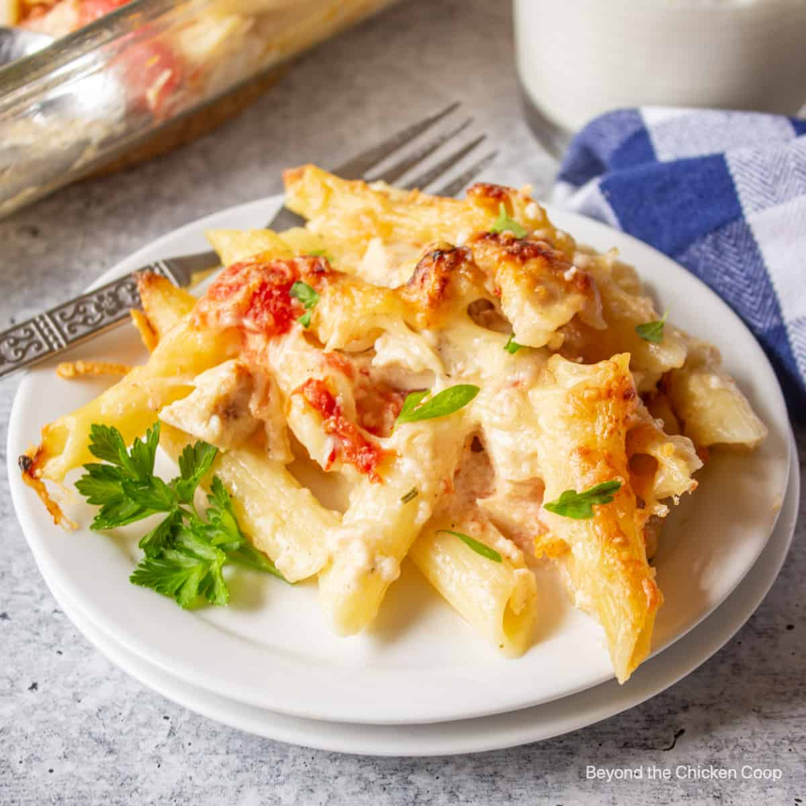

This baked pasta is comfort food at its finest. Filled with chunks of chicken, penne pasta, chopped tomatoes all wrapped up in a creamy cheese sauce.
Heat 2 tbsp of the oil in a pan over a medium heat and fry the onion gently for
10-12 mins. Add the garlic and chilli flakes and cook for 1 min. Tip in the
tomatoes and sugar and season to taste. Simmer uncovered for 20 mins or until
thickened, then stir through the mascarpone.
Heat 1 tbsp of oil in a non-stick frying pan. Season the chicken and fry for 5-7
mins or until the chicken is cooked through.
Heat the oven to 220C/200C fan/gas 7. Cook the penne following pack instructions
Drain and toss with the remaining oil. Tip the pasta into a medium sized ovenproof dish.
Stir in the chicken and pour over the sauce. Top with the cheddar, mozzarella and parsley
Bake for 20 mins or until golden brown and bubbling.